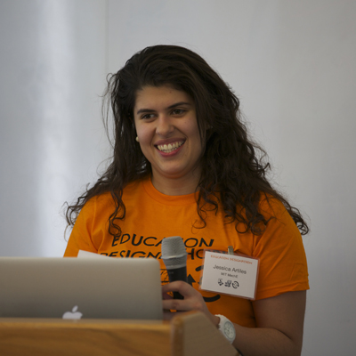

About Us
We're just some untraditional souls trying to bring positive change to the education system.

Jessica Artlies
The head and the heart of the Education Designshop. Jess is a community engagement veteran who has spearheaded half a dozen events with hundreds of participants before coming up with the wholesome grail of workshops: the Education DesignShop. She researches how design thinking can be taught to non-designers in order to innovate in large systems, and she's excited to make history with you all! Her international experience with SPEED (the Student Platform for Engineering Education Development) has enabled her to try out design thinking methods with engineers from across the globe, and she's committed to spreading the love for "design with a small d" to continue to impact education. Jess is such an MIT kid - in a good way. By the time she finishes grad school, she will have gained degrees in Mechanical Engineering (both a Bachelor's and Master's) and in Technology and Policy. All around proud of her Cuban heritage, Jess is an accomplished salsa dancer with about two plethoras of friends. Her amicability will blow your head off.

Filip Goc
A Learning Interaction Designer freelancing in the greater Boston area, Filip directly applies his love for late night philosophizing when tweaking the subtleties of the DesignShop. His attention to design thinking processes, visuals, and fine espresso gives the DesignShop a unique perspective that only UVa and HGSE grad can combine. A Czech native with love for the Czech language and tongue twisters. An aspiring (perspiring) swing dancer and a recreational printmaker. When he's not facilitating curriculum re-design, you can find him on a silver bicycle running across the whole city while wishing he was somewhere in the mountains.

Prof. David Wallace
An inspiration to most, and an honest critic throughout, just one class with David will re-ignite your passion for education. Professor Wallace embodies what every good educator should: a love for education, and a ruthless knack for improvement. Professor Wallace teaches many levels of Product Design within the Mechanical Engineering Department at MIT and serves the unordinary role as Jessica's Research Advisor, thus sparking the exploration into the integration of design thinking and education.
Advisors Near and Far
This event wouldn't be possible without the invaluable input from big thinkers that dared to entertain the idea of the DesignShop. Some of these folks include, in no particular order: Karen Brennan, Michelle Chung, Bill Wisser, Edward Clapp, Jim Bales, Jennifer DeBoer, Darshita Shah, Sanjay Sarma, Emily Martin, and all of our excellent mentors that have committed their time to the event. On behalf of tomorrow's generation of students, Thank You.